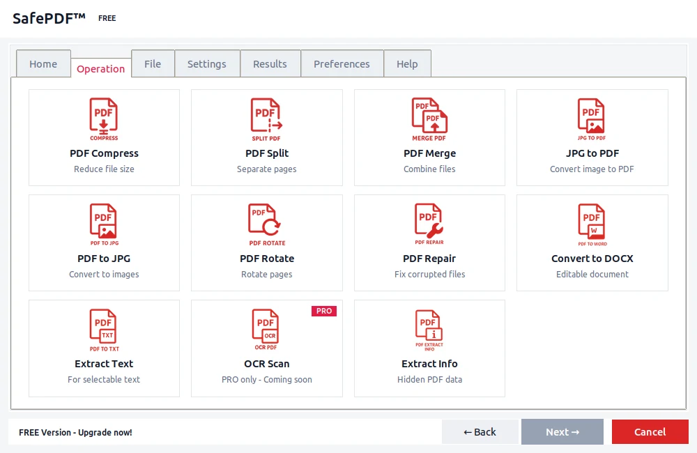

PDF to Word
Editable DOCX files from any PDF.
Read guideSafePDF is a free, open-source desktop app for Windows, macOS and Linux. Merge, split, compress, convert, rotate and repair PDFs on your own computer. No accounts, no cloud, no waiting in a queue.

What it does
Pick an operation, drop in a file, get your result. Everything happens on your machine.
Shrink big PDFs for email or archiving, with a quality setting you control.
Combine several files into one, or pull out just the pages you need.
PDF to and from Word, Excel, PowerPoint, JPG, PNG and plain text.
Fix sideways pages and recover readable content from damaged files.
View and edit the title, author, subject and keywords of a document.
Scan image-only PDFs with OCR, and automate repeats from the command line.
Privacy
SafePDF reads and writes your files directly on your computer. There is no upload step to trust, because there is no upload step at all.
Converters
Each guide below explains what the tool does and how to run it offline.
Editable DOCX files from any PDF.
Read guide
Tables and numbers into a spreadsheet.
Read guide
Turn PDFs into editable slides.
Read guide
Export pages as image files.
Read guide
Lossless page exports when quality matters.
Read guide
Clean, searchable text you can reuse.
Read guideDownload the free app, open a PDF, and pick an operation. No signup, nothing to configure.
Guides
When local software beats a browser tool, and the workflows that benefit most.
Read the guideWhy on-device conversion matters for contracts, invoices and other sensitive files.
Read the guideAn external article on the risks of upload-based PDF services.
Read on MediumFAQ
Yes. The desktop app is free and open source under GPL-3.0. Pro is optional and adds batch processing and priority support.
No. Everything is processed on your device. There is no cloud step, so nothing can leak in transit.
Windows, macOS and Linux. You can also install it from PyPI with pip install SafePDF.
No. Unplug your connection and it still works. Internet is only used for optional update checks.
Yes. The full source is on GitHub, so you can review it or build it yourself.
Yes. The GPL-3.0 license covers commercial use. Pro adds batch processing for larger workflows.
The core app is free and open source. Pro is a yearly license for heavy workflows.
€0 forever
€12 / year
Prefer a shorter term? 30 days or 90 days. Payments are handled by Gumroad and no files are ever uploaded to our servers.